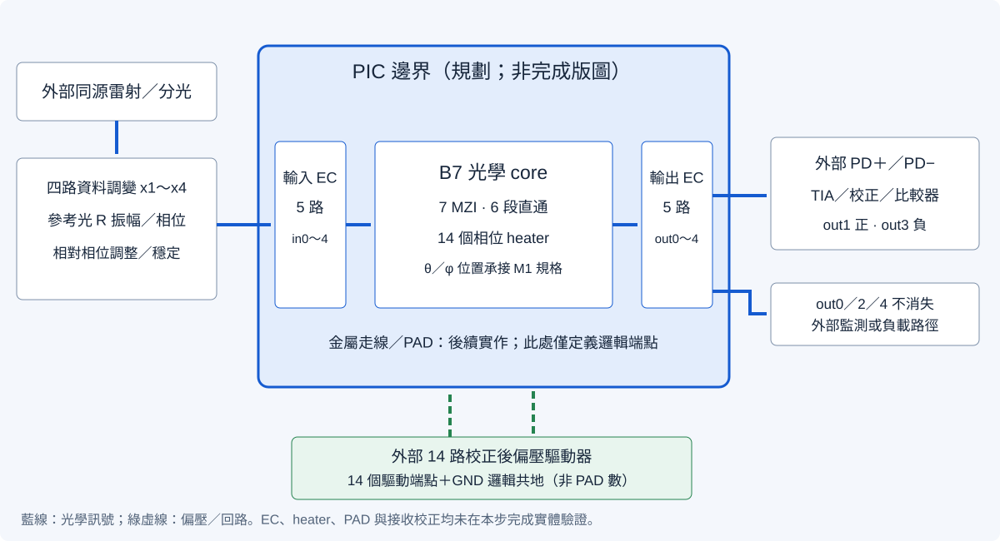
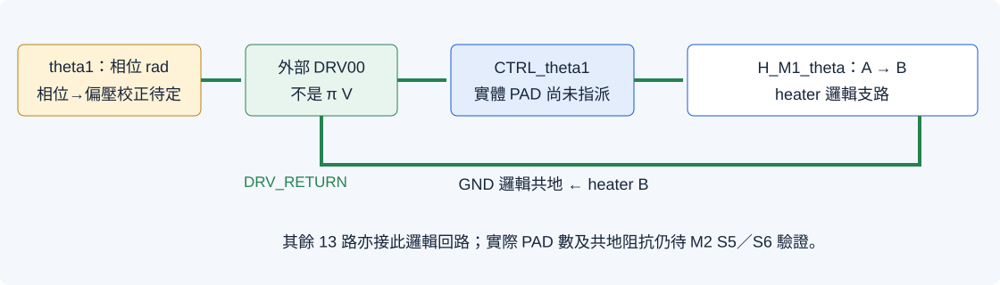

M2 S1｜PIC 邊界與 I/O 表
先把晶片內外的責任與光／電端點說清楚，再進入 PDK 電路、heater 與版圖實作。
10 個規劃光學接口14 驅動端點＋邏輯共地M1 原檔不變本輪結果：10 個規劃光學接口、14 路相位驅動與 1 個邏輯共地；15/15 項本步測試、99/99 項回歸通過。M1 檔案未改，仍重播 80/80。邏輯邊界與 I/O 核對通過；學員作答另行驗收。
1．先預測：光學運算、資料編碼與數位判讀各在哪裡？
建議 30 分鐘：讀邊界圖 5 分、光學／電氣 I/O 表 10 分、追蹤路徑 5 分、校正與待辦 5 分、學員交付 5 分。
- 四路資料位元應直接去 heater，還是先在外部變成光資料？
- out1 與 out3 接 PD 後，哪一條是功率差的正端？
- 沒有讀取的 out0、out2、out4 是否可以不做任何去向？
- 14 路驅動加一個邏輯 GND，是否就代表最終只有 15 顆 PAD？
2．先畫 PIC 邊界，再列責任

| 功能區塊 | 所在位置 | 本步狀態 |
|---|---|---|
| B7 光學運算 | PIC 內規劃 | 待實體實作 |
| 規劃光學耦合接口 | PIC 內規劃 | 待實體實作 |
| 相位 heater | PIC 內規劃 | 待實體實作 |
| 金屬走線／邏輯 PAD 端點 | PIC 內規劃 | 待實體實作 |
| 共同相干光源 | 外部設備 | 外部系統需求，尚未指定設備 |
| 四路光資料調變 | 外部設備 | 外部系統需求，尚未指定設備 |
| 參考光振幅／相位調整 | 外部設備 | 外部系統需求，尚未指定設備 |
| 相對相位對準／穩定 | 外部設備 | 外部系統需求，尚未指定設備 |
| 十四路校正後偏壓驅動 | 外部設備 | 外部系統需求，尚未指定設備 |
| 正／負讀取 PD | 外部設備 | 外部系統需求，尚未指定設備 |
| TIA／校正／數位比較 | 外部設備 | 外部系統需求，尚未指定設備 |
| 其他輸出的外部監測／負載 | 外部設備 | 外部系統需求，尚未指定設備 |
heater 用來設定功能相位；本課程的資料 0／1 由外部光調變送入，不以每一筆資料切換 heater。PD／TIA／比較器將光功率轉成電訊號與數位結果，也在 PIC 邊界之外。
3．光學 I/O：五路進、五路出，保留全部光路
| 接口 ID | core 埠 | 角色 | 規劃側／EC | 外部端點 |
|---|---|---|---|---|
| OPT_IN0 | in0 | x1 | 左側 / EC_IN0 | EXT_DATA_X1 |
| OPT_IN1 | in1 | x2 | 左側 / EC_IN1 | EXT_DATA_X2 |
| OPT_IN2 | in2 | x3 | 左側 / EC_IN2 | EXT_DATA_X3 |
| OPT_IN3 | in3 | x4 | 左側 / EC_IN3 | EXT_DATA_X4 |
| OPT_IN4 | in4 | R | 左側 / EC_IN4 | EXT_REFERENCE |
| OPT_OUT0 | out0 | unread_output | 右側 / EC_OUT0 | EXT_LOAD0 |
| OPT_OUT1 | out1 | positive_readout | 右側 / EC_OUT1 | PD_PLUS |
| OPT_OUT2 | out2 | unread_output | 右側 / EC_OUT2 | EXT_LOAD2 |
| OPT_OUT3 | out3 | negative_readout | 右側 / EC_OUT3 | PD_MINUS |
| OPT_OUT4 | out4 | unread_output | 右側 / EC_OUT4 | EXT_LOAD4 |
out1→PD_PLUS，out3→PD_MINUS，維持 ΔP=P(out1)−P(out3)。out0／2／4 同樣保留規劃輸出 EC，再接外部監測或負載；本步尚未指定負載元件或完成反射分析。
同源光與 core 參考平面
外部共同雷射 → 分光／四路資料調變＋參考光調整 → 輸入耦合 → M1 core in0..4
M1 core 目標：資料 1 的場=1、R 場=3、R 功率=9
此數字在輸入耦合之後的 core 參考平面定義。
它不是雷射輸出 3 W，也不是忽略不同耦合損耗後的固定分光比例。五路輸入規劃由同一個相干光源分出，但同源本身不表示路徑相位已校正；仍需維持資料與 R 的相對相位。相干場與相位的關係可參考 TU Delft 的干涉與相干教材。
4．電氣 I/O：14 個驅動端點，不是已完成的 14 顆 PAD
| 接口 | 相位通道／MZI | 外部驅動 | PIC 端點 | 回路 | 實體 PAD／偏壓 |
|---|---|---|---|---|---|
| CTRL_theta1 | theta1 / M1 | DRV00 | H_M1_theta.A | GND | M2 待定 |
| CTRL_theta2 | theta2 / M2 | DRV01 | H_M2_theta.A | GND | M2 待定 |
| CTRL_theta3 | theta3 / M3 | DRV02 | H_M3_theta.A | GND | M2 待定 |
| CTRL_theta4 | theta4 / M4 | DRV03 | H_M4_theta.A | GND | M2 待定 |
| CTRL_theta5 | theta5 / M5 | DRV04 | H_M5_theta.A | GND | M2 待定 |
| CTRL_theta6 | theta6 / M6 | DRV05 | H_M6_theta.A | GND | M2 待定 |
| CTRL_theta7 | theta7 / M7 | DRV06 | H_M7_theta.A | GND | M2 待定 |
| CTRL_phi1 | phi1 / M1 | DRV07 | H_M1_phi.A | GND | M2 待定 |
| CTRL_phi2 | phi2 / M2 | DRV08 | H_M2_phi.A | GND | M2 待定 |
| CTRL_phi3 | phi3 / M3 | DRV09 | H_M3_phi.A | GND | M2 待定 |
| CTRL_phi4 | phi4 / M4 | DRV10 | H_M4_phi.A | GND | M2 待定 |
| CTRL_phi5 | phi5 / M5 | DRV11 | H_M5_phi.A | GND | M2 待定 |
| CTRL_phi6 | phi6 / M6 | DRV12 | H_M6_phi.A | GND | M2 待定 |
| CTRL_phi7 | phi7 / M7 | DRV13 | H_M7_phi.A | GND | M2 待定 |
| GND | 共地，非第 15 路相位 | DRV_RETURN | GND | GND | M2 待定 |

phase_settings.json 中 theta1 的值：rad
↓ heater／波導校正（待定）
外部 DRV00 的電壓或電流設定（尚未指定數值／單位）
↓ CTRL_theta1 → H_M1_theta.A
heater 支路 → H_M1_theta.B → GND → DRV_RETURN
14 個獨立驅動端點 + 1 個邏輯回路 = 15 個電氣介面角色
實際 PAD 顆數仍為 null，可能需要額外的共地 PAD 或走線設計。phase=π 不能直接寫成電壓 π V。drive_value、drive_unit、calibration、pad_id、physical_pad_count 全部保留未指派；本步不選電源、電壓上限、heater 電阻或熱響應速度。
5．外部 PD 電流不一定等於 M1 的 core 功率差
若 P+、P− 為 M1 core 的實際光功率：
I+ ≈ ℛ+ η+ P+ + Ioffset,+
I− ≈ ℛ− η− P− + Ioffset,−
η：輸出耦合／光路的功率傳輸率
ℛ：PD 響應度（A/W）
先校正兩路損耗、響應度、接收增益與偏移，
才能讓外部判讀對應固定的 core ΔP=P(out1)−P(out3)。
M1 的 normalized 功率轉成 W 的刻度，也尚未指定。本規劃選擇比較「等效 core 功率差」並保留門檻 0；不是直接假設兩個未校正 PD 的原始電流差就符合 M1。PD 響應度與光電流／功率的定義可參考 Hamamatsu 技術說明。本步的 physical_receiver_spec 及兩路校正均待定。
6．學員操作與可讀取檔案
Set-Location -LiteralPath 'C:\EDA_Codex\Lab06b'
& .\scripts\run_m2_s1.ps1正式邊界設定為 config/m2_boundary.json，以 SHA-256 綁定 M1 的 pic_spec.json，另存成 overlay，不改寫 M1 交接規格。輸出表格均從同一份設定產生。
| 檔案 | 用途 |
|---|---|
| optical_io.csv | 10 個光學接口、core 埠、規劃側邊與外部去向。 |
| electrical_io.csv | 14 驅動＋GND 角色；not_applicable 與 pending_M2 分開。 |
| heater_returns.csv | 十四個 heater B 端的邏輯共地連接。 |
| system_blocks.csv | 4 個 PIC 規劃區塊、8 個外部功能區塊。 |
| boundary_plan.json · manifest | 邊界設定副本與檔案雜湊；非完整晶片交付。 |
互動追蹤：介面是光、相位驅動，還是共地？
本預覽只追蹤邏輯端點與相位值，不計算實際驅動電壓、耦合損耗或接收器校正。
7．核對結果與刻意錯誤
| 項目 | 結果 |
|---|---|
| 本步單元測試 | 15/15；log |
| 前步回歸 | 99/99；M0 S3 與 M1 S1～S5。 |
| M1 原規格／相位與共用模型 | 雜湊不變；M1 交接包重播 80/80。 |
| 來源綁定、表格與回路 | 11/11 項通過；完整 JSON。 |
| 錯誤 | 結果 | 實際驗證訊息 |
|---|---|---|
| 刪掉 out0 去向 | 已拒絕 | boundary.optical_io: boundary, role, mapping or pending physical assignment mismatch |
| 將 PD 搬進本課程 PIC 邊界 | 已拒絕 | boundary.system_blocks: boundary, role, mapping or pending physical assignment mismatch |
| 交換正／負接收接口 | 已拒絕 | boundary.receiver: boundary, role, mapping or pending physical assignment mismatch |
| 兩個相位誤用同一驅動通道 | 已拒絕 | boundary.electrical_io: boundary, role, mapping or pending physical assignment mismatch |
| 將 R 功率誤填為 3 | 已拒絕 | boundary.core_field_targets: boundary, role, mapping or pending physical assignment mismatch |
下一步 M2 S2：使用 CORNERSTONE PDK 的 MMI 建立電路模型，固定同一份規格及相位設定，重跑 80 筆並比較 M1 理想模型的差異。